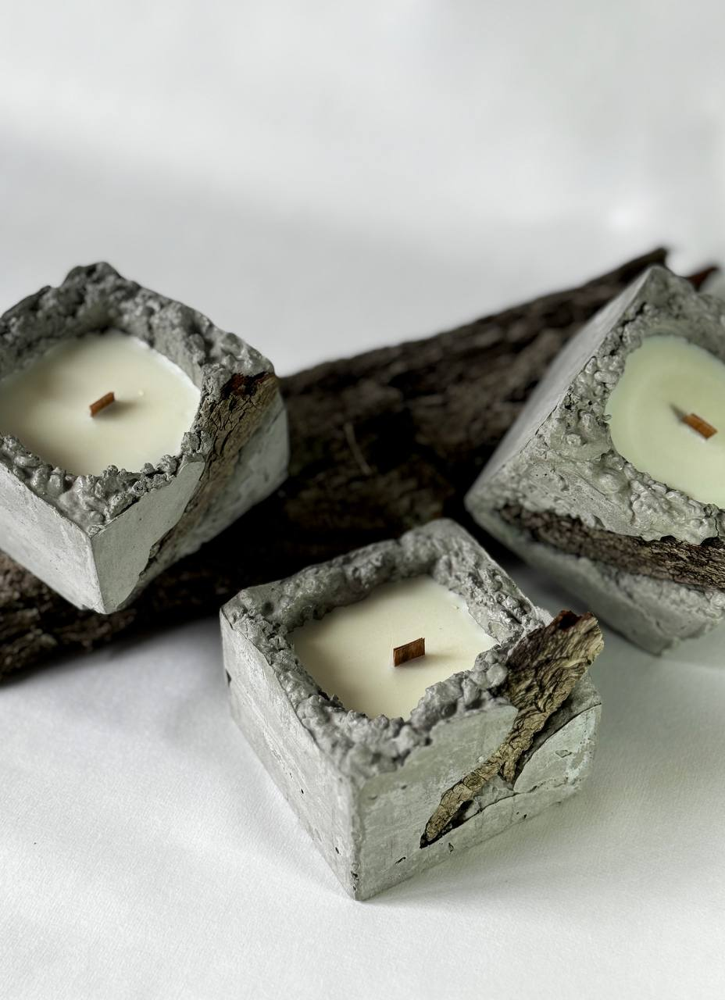
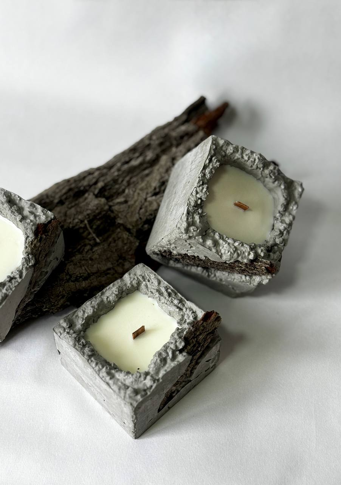
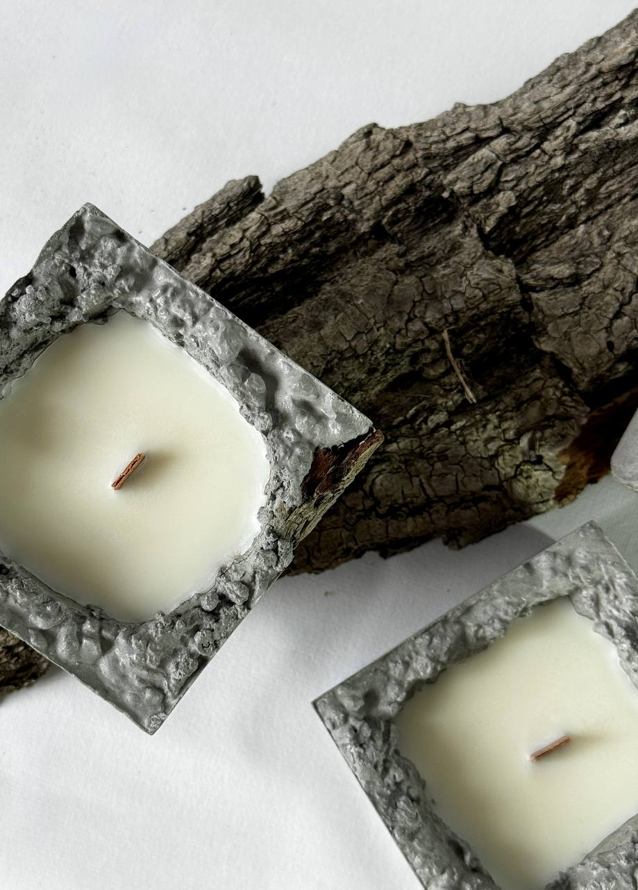
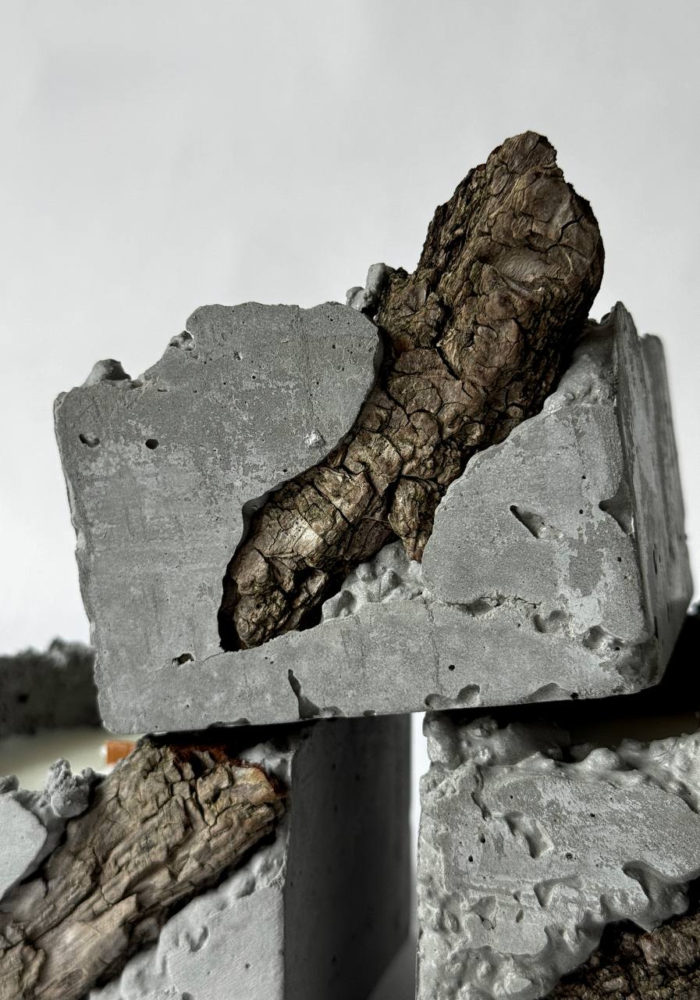

Ароматная свеча · ручная работа
Кора
Там, где бетон встречается с настоящим деревом.
Каждую форму создают вручную из бетона и дополняют фрагментом настоящей коры дерева. Неровный край, живой рисунок древесины и фактура поверхности делают каждый экземпляр неповторимым.
Внутри — ароматная свеча с деревянным фитилём. Это предмет для спокойных домашних вечеров и необычный подарок.
МатериалыБетон, настоящая кора дерева, свечаОсобенностьРисунок коры и форма каждого экземпляра различаются
950 ₽
Заказать в Instagram ↗Доставка СДЭК по всей России · до 7 дней
Рассмотреть ближе



Каждое изделие немного отличается — в этом его характер.